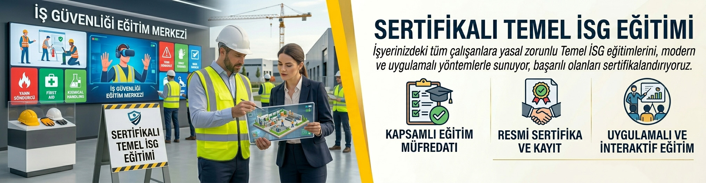

Sertifikalı Temel İSG Eğitimi
Çalışanlarınızı bilinçlendirin, yasal yükümlülüklerinizi yerine getirin
Sertifikalı Temel İSG Eğitimi
6331 sayılı iş sağlığı ve güvenliği kanunu gereğince işveren; çalışanlarının zorunlu temel iş sağlığı ve güvenliği eğitimi almasını sağlamakla yükümlüdür. Bu yükümlülüğü yerine getirmeyen işveren 1120 TL idari para cezasına çarptırılır. İş kazaları ve meslek hastalıkları büyük ölçüde eğitimsizlikten kaynaklanır. Eğitimin amacı, çalışanlarda iş sağlığı ve güvenliği bilinci oluşturup kazaları minimum seviyeye düşürmektir.
📚 Eğitim Konuları
📘 Genel Konular
- Çalışma mevzuatı ile ilgili bilgiler
- Çalışanların yasal hak ve sorumlulukları
- İş yeri temizliği ve düzeni
- İş kazası ve meslek hastalığından doğan hukuki sonuçlar
🩺 Sağlık Konuları
- Meslek hastalıklarının sebepleri
- Hastalıktan korunma prensipleri ve korunma tekniklerinin uygulanması
- Biyolojik ve psikososyal risk etmenleri
- İlk yardım
⚙️ Teknik Konular
- Kimyasal fiziksel ve ergonomik risk etmenleri
- Elle kaldırma ve taşıma
- Parlama patlama yangın ve yangından korunma
- İş ekipmanları'nın güvenli kullanımı
- Ekranlı araçlarla çalışma
- Elektrik tehlikeleri riskleri ve önlemleri
- İş kazalarının sebepleri ve korunma prensipleri ile tekniklerinin uygulanması
- Güvenlik ve sağlık işaretleri
- Kişisel koruyu donanım kullanımı
- İş sağlığı ve güvenliği genel kuralları ve güvenlik kültürü
- Tahliye ve kurtarma